Before considering how to fiddle with particle velocities or forces to enforce constant temperature, it is worth considering what statistical thermodynamics has to say about temperature. When we have direct knowledge of instantaneous particle velocities, we know that the kinetic energy is
where we recognize that all momentum components are independent variables. We also know that temperature (in reduced units) is directly proportional to kinetic energy:
With this equivalence, we can consider the “instantaneous” temperature as
Since momenta must fluctuate it is necessarily the case that instantaneous temperature also fluctuates. Let's see how much.
First, since all momenta are independent, it follows from the definition of the canonical partition function that a particle momentum component 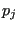 follows the Maxwell-Boltzmann distribution:
We can characterize fluctuations in 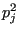 by dividing its variance
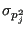 to the square of its average
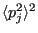. The variance is defined
Using the Maxwell-Boltzmann distribution:
and
Thus,
Now, let's compute fluctuations in the instantaneous temperature. First, the average:
Now the variance,
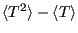, starting with
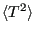:
Note that in going from Eq. 195 to 196, we note the fact that
since momenta are not correlated to each other. Putting these together:
| 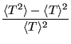 |
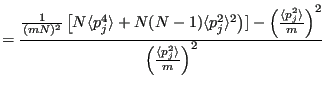 |
(198) |
| |
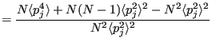 |
(199) |
| |
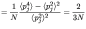 |
(200) |
So clearly temperature fluctuates in the canonical ensemble. Of course, in the thermodynamic limit (
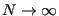), these fluctuations vanish and we perceive a “constant” temperature, but in a simulation in which we resolve the momenta of a set of  particles, we must observe that
particles, we must observe that  fluctuations as shown above. We can use this fact to decide whether or not a temperature-control scheme in MD is actually resulting in sampling the canonical ensemble.
fluctuations as shown above. We can use this fact to decide whether or not a temperature-control scheme in MD is actually resulting in sampling the canonical ensemble.
cfa22@drexel.edu